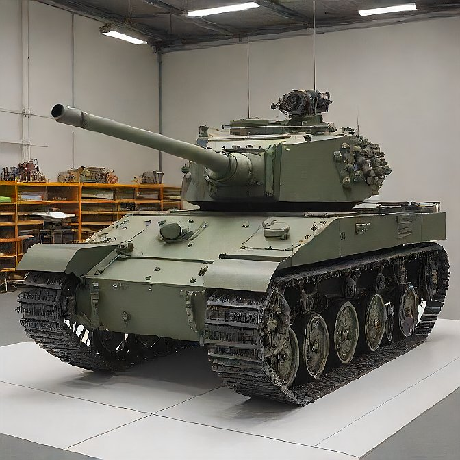

Artur Neves Höpner
Artur Neves Höpner é um colorado apaixonado por futebol, programação, matemática, mecatrônica e tanques de guerra.
Hoje Artur faz Centro-Weg na área de programação de sistemas e é goleiro quando pode. Ele têm 2 irmãos gêmeos e ama ficar com a familia.